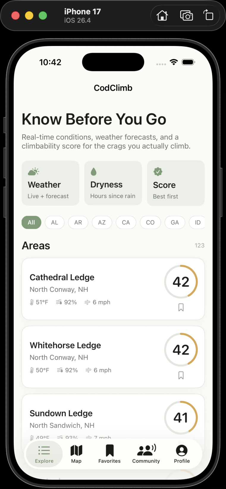
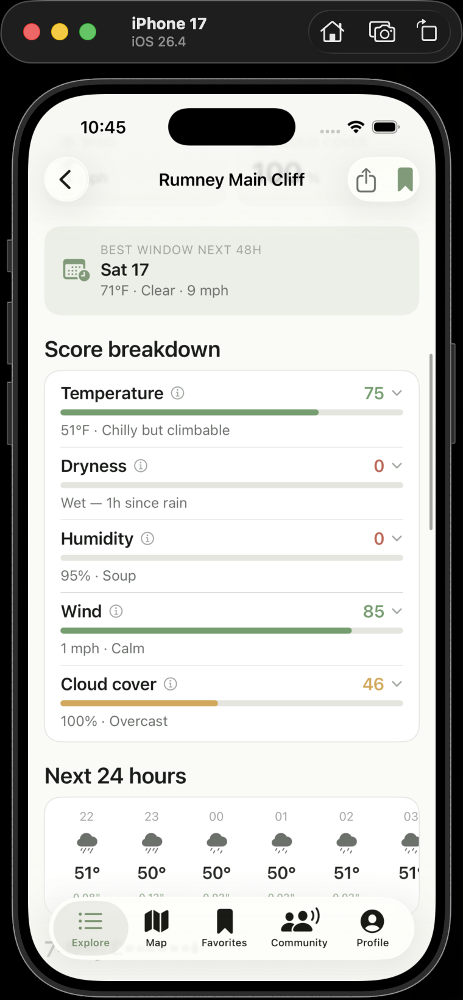
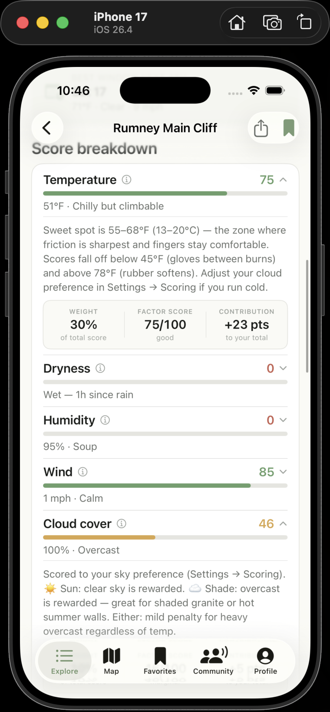
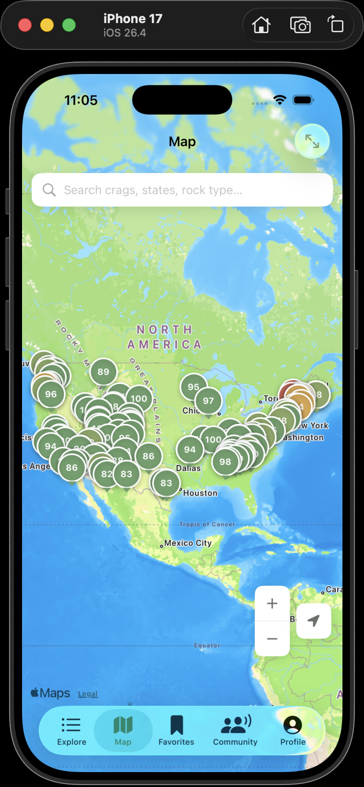
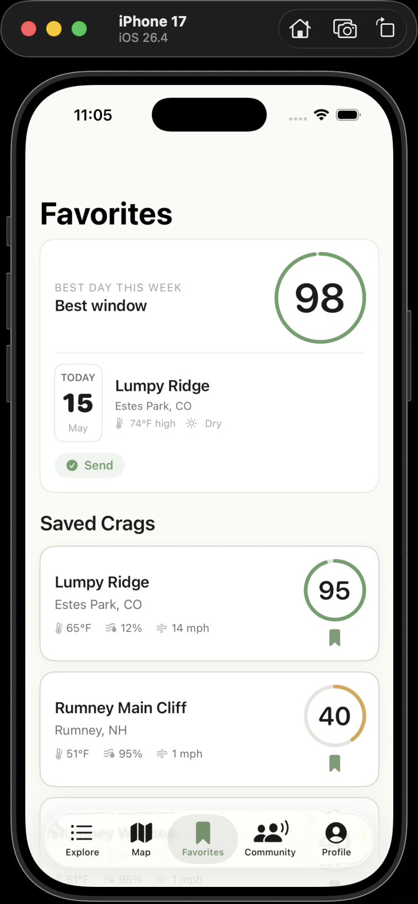
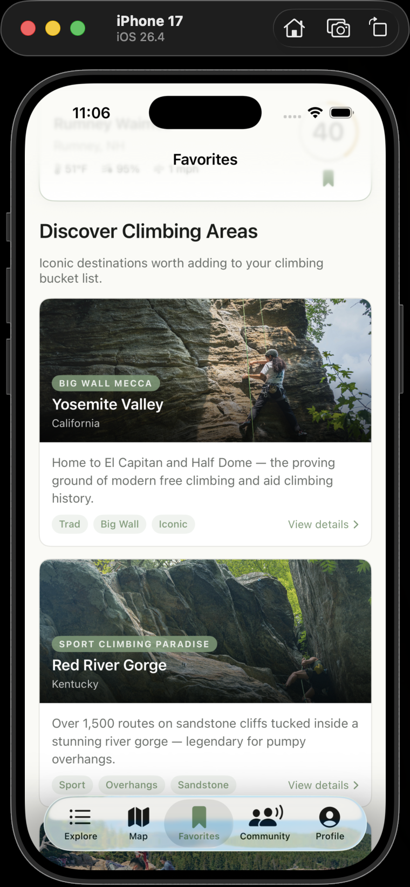
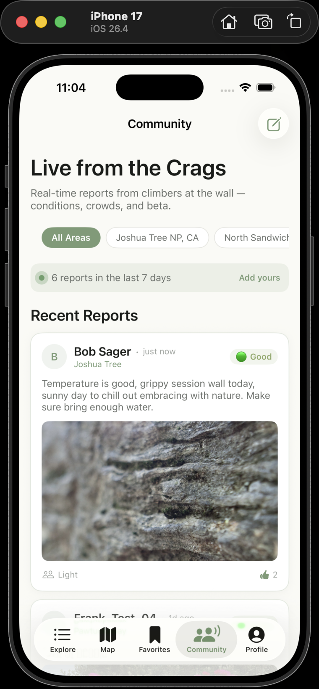
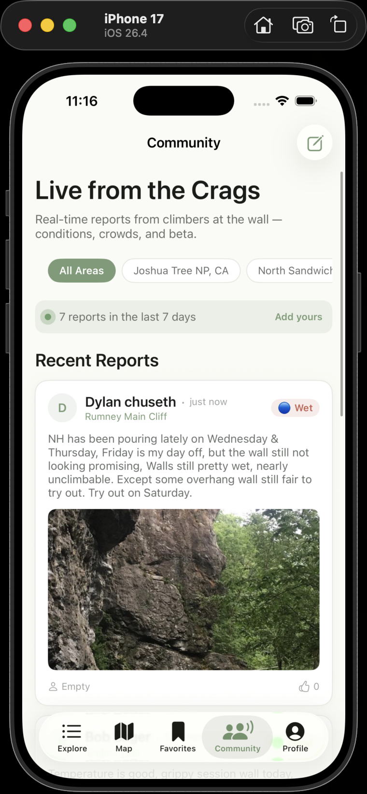
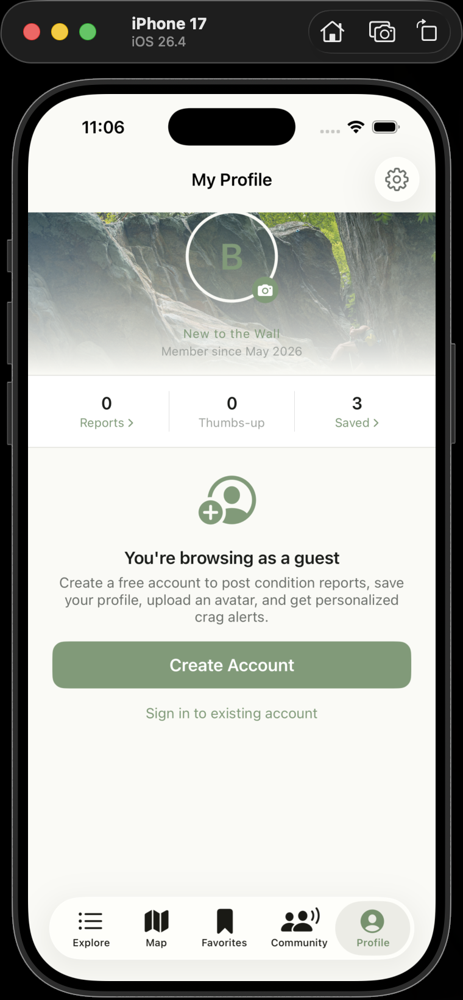

🧭 Explore
123 US Crags. Live, Right Now.
The Explore tab is your mission control. Browse every crag by score, search by name, filter by rock type, style, or region — and jump straight to the ones worth driving to.

-
🌡Live climbability score (0–100) Computed from real weather data every 30 minutes. Green = send it, amber = marginal, red = stay home.
-
🔍Search & multi-filter Filter by rock type (granite, limestone, sandstone…), climbing style (sport, trad, bouldering, top-rope), sun exposure, and region simultaneously.
-
📍Best window highlight Each crag shows the best upcoming 2-hour climbing window in the next 48 hours — so you know exactly when to leave the house.
-
🌙Night mode scoring After sunset, the score card shifts focus to tomorrow's forecast so you're planning the next morning, not the current dark hours.
-
🌧Rain warning banner Prominent amber banner with exact hours until the next forecasted precipitation event. Never get caught off guard.
📊 Score Breakdown
Five Factors. One Honest Number.
The climbability score isn't a vibes-based guess — it's a weighted formula built from the conditions that actually matter to rock climbers.


80–100
Send conditions 🎉
60–79
Solid day out
40–59
Marginal — bring layers
0–39
Not worth the drive
-
🌤24-hour hourly forecast strip Scroll through hour-by-hour temperature, wind, and precipitation to plan your exact start time.
-
📅7-day daily summary Plan the full weekend. See high/low temperature, rain probability, and a quick score for each day.
🗺 Map
See Every Crag at a Glance.
The full-screen map shows all 123 crags as color-coded pins. Green pins near you? It's a sign.

-
📌Score-colored pins Each pin reflects the crag's live climbability score — green, amber, or red — loaded lazily to keep the map fast and battery-friendly.
-
🔎Search to fly Type any crag name, state, or rock type and the map instantly pans to matching results.
-
👆Tap to detail Tap any pin to open the full crag detail sheet — score, forecast, weather factors, and community reports — without leaving the map.
-
📍User location One-tap location button centers the map on you so you can see what's climbable nearby right now.
⭐ Favorites & Trip Planner
Plan the Perfect Weekend.
Bookmark your go-to crags and let CodClimb rank them by Saturday and Sunday scores — so you always know which one is worth the drive this weekend.


-
❤️One-tap bookmark Save any crag from the list or detail view. Your favorites sync instantly and persist across sessions.
-
🗓Weekend trip planner NEW Your saved crags are automatically ranked by their best Saturday and Sunday forecast scores. Top pick of the weekend is highlighted.
-
🧗Curated destinations "Discover Climbing Areas" — a curated grid of iconic US crags with hero photos and quick beta for when you're ready to explore beyond your usual spots.
-
🔔Score threshold alerts BETA Set a minimum score for any saved crag and get notified when conditions hit your threshold — so you never miss a perfect window.
💬 Community
Real Reports from Real Climbers.
The community feed aggregates recent condition reports from climbers who were actually there. Weather models can't tell you about that seeping crack — other climbers can.


-
📝Condition reports Post rock condition, crowd level, notes, and up to 4 photos from your session. Reports stay visible for 7 days.
-
📸Up to 4 photos per report NEW Share the full picture — approach trail, rock condition, the send. Photos are stored in Firebase and load quickly in the feed.
-
👍Thumbs-up reactions Upvote reports you found helpful. High-thumbs reports rise in visibility. Reactions require a free account.
-
🔒Guest preview Guests see the 5 most recent reports — enough to get a feel for the community. Sign up (free, 30 seconds) to read all and post your own.
👤 Profile
Your Climbing Identity.
Track your contributions, set your preferences, and build a public profile the community can find and trust.

-
🏅Climber title system Earn titles based on your report count — from "New to the Wall" through "Crag Scout," "Trail Crusher," "Route Setter's Eye," and finally "Active Goat 🐐."
-
🖼Custom avatar Upload a photo from your library. Stored in Firebase Storage and shown alongside your reports in the community feed.
-
✍️Bio & climbing styles Write up to 150 characters about yourself and tag your preferred styles (sport, trad, bouldering, top-rope). Visible on your public profile card.
-
📊Report stats Your total reports and cumulative thumbs-up are displayed on your profile and updated in real time whenever the community feed refreshes.
-
🔐Clean sign-out Signing out fully clears your identity — no previous user's name or stats bleed through to the next session.
🔑 Access Levels
Browse First, Sign Up When Ready.
CodClimb lets you explore conditions immediately as a guest. A free account unlocks community features — no subscription, no paywall.
-
📧Email & password Classic sign-up with email and password. Password reveal toggle included. Forgot password flow emails a reset link instantly.
-
GGoogle Sign-In One-tap Google authentication. No new password to remember. Uses the native iOS Google Sign-In sheet.
-
👻Anonymous browsing Open the app and start exploring immediately — no account required to see scores, forecasts, and a preview of community reports.
| Feature | Guest | Signed In |
|---|---|---|
| Crag list + live scores | ✓ | ✓ |
| Score breakdown + forecast | ✓ | ✓ |
| Map with score pins | ✓ | ✓ |
| Community reports (preview) | 5 reports | All reports |
| Post condition reports | — | ✓ |
| Upload photos with reports | — | Up to 4 |
| Thumbs-up reactions | — | ✓ |
| Favorite crags | — | ✓ |
| Weekend trip planner | — | ✓ |
| Score threshold alerts | — | ✓ |
| Public profile + avatar | — | ✓ |
Ready to Climb Smarter?
CodClimb is in Beta 0.1.0. Get early access and help shape what's next.